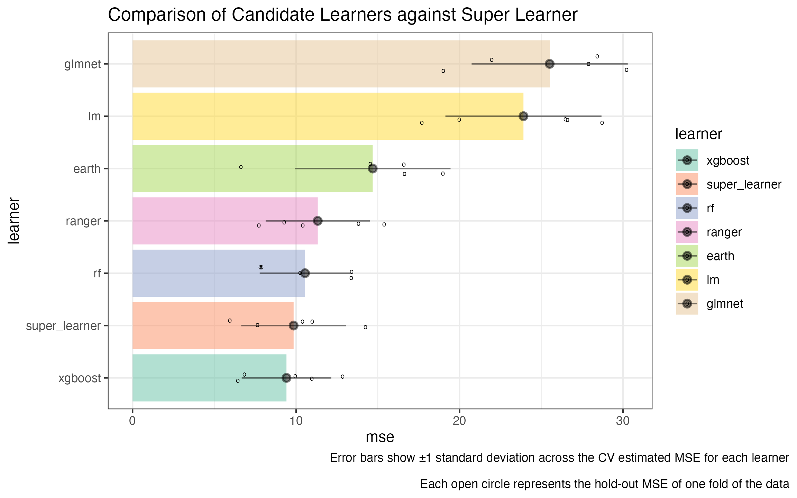

Visualizing Performance
Source:vignettes/articles/Visualizing-Performance.Rmd
Visualizing-Performance.RmdA good future step would be to provide functions that automate the
below plotting code given the output of compare_learners()
and cv_super_learner().
data("Boston", package = "MASS")
# construct our super learner with verbose = TRUE
sl_model <- super_learner(
data = Boston,
formulas = medv ~ .,
learners = list(
lm = lnr_lm,
rf = lnr_rf,
ranger = lnr_ranger,
xgboost = lnr_xgboost,
glmnet = lnr_glmnet,
earth = lnr_earth
),
verbose = TRUE)
compare_learners(sl_model)
#> Inferring the loss metric for learner comparison based on the outcome type:
#> outcome_type=continuous -> using mean squared error
#> # A tibble: 1 × 6
#> lm rf ranger xgboost glmnet earth
#> <dbl> <dbl> <dbl> <dbl> <dbl> <dbl>
#> 1 23.9 10.5 11.3 9.41 25.5 14.6
pacman::p_load('dplyr', 'ggplot2', 'tidyr', 'magrittr')
truth <- sl_model$holdout_predictions$mpg
#> Warning: Unknown or uninitialised column: `mpg`.
holdout_var <- sl_model$holdout_predictions |>
dplyr::group_by(.sl_fold) |>
dplyr::summarize(across(everything(), ~ mean((. - medv)^2))) |>
dplyr::summarize(across(everything(), var)) |>
select(-medv, -.sl_fold) |>
t() |>
as.data.frame() |>
tibble::rownames_to_column('learner') |>
dplyr::rename(var = V1) |>
dplyr::mutate(sd = sqrt(var))
jitters <- sl_model$holdout_predictions |>
dplyr::mutate(dplyr::across(-.sl_fold, ~ (. - medv)^2)) |>
dplyr::select(-medv) %>%
tidyr::pivot_longer(cols = 2:ncol(.), names_to = 'learner', values_to = 'squared_error') |>
dplyr::group_by(learner, .sl_fold) |>
dplyr::summarize(mse = mean(squared_error)) |>
ungroup() |>
rename(fold = .sl_fold)
#> `summarise()` has grouped output by 'learner'. You can override using the
#> `.groups` argument.
learner_comparison_df <- sl_model |>
compare_learners() |>
t() |>
as.data.frame() |>
tibble::rownames_to_column(var = 'learner') |>
dplyr::mutate(learner = factor(learner)) |>
dplyr::rename(mse = V1) |>
dplyr::left_join(holdout_var) |>
dplyr::mutate(
upper_ci = mse + sd,
lower_ci = mse - sd) |>
dplyr::mutate(learner = forcats::fct_reorder(learner, mse))
#> Inferring the loss metric for learner comparison based on the outcome type:
#> outcome_type=continuous -> using mean squared error
#> Joining with `by = join_by(learner)`
jitters$learner <- factor(jitters$learner, levels = levels(learner_comparison_df$learner))
learner_comparison_df |>
ggplot2::ggplot(ggplot2::aes(y = learner, x = mse, fill = learner)) +
ggplot2::geom_col(alpha = 0.5) +
ggplot2::geom_jitter(data = jitters, mapping = ggplot2::aes(x = mse), height = .15, shape = 'o') +
ggplot2::geom_pointrange(mapping = ggplot2::aes(xmax = upper_ci, xmin = lower_ci),
alpha = 0.5) +
ggplot2::theme_bw() +
ggplot2::ggtitle("Comparison of Candidate Learners") +
ggplot2::labs(caption = "Error bars show ±1 standard deviation across the CV estimated MSE for each learner\n
Each open circle represents the hold-out MSE of one fold of the data") +
ggplot2::theme(plot.caption.position = 'plot')
cv_results <- cv_super_learner(
data = Boston,
formulas = medv ~ .,
learners = list(
lm = lnr_lm,
rf = lnr_rf,
ranger = lnr_ranger,
xgboost = lnr_xgboost,
glmnet = lnr_glmnet,
earth = lnr_earth
)
)
#> The loss_metric is being inferred based on the outcome_type=continuous -> using CV-MSE
cv_jitters <- cv_results$cv_trained_learners |>
dplyr::select(split, predictions, medv) |>
tidyr::unnest(cols = c('predictions', 'medv')) |>
dplyr::group_by(split) |>
dplyr::summarize(mse = mean((medv - predictions)^2)) |>
dplyr::bind_cols(learner = 'super_learner')
cv_var <- cv_results$cv_trained_learners |>
dplyr::select(split, predictions, medv) |>
tidyr::unnest(cols = c(predictions, medv)) |>
dplyr::mutate(squared_error = (medv - predictions)^2) |>
dplyr::group_by(split) |>
dplyr::summarize(mse = mean(squared_error)) |>
dplyr::summarize(
var = var(mse),
mse = mean(mse),
sd = sqrt(var),
upper_ci = mse + sd,
lower_ci = mse - sd) |>
dplyr::bind_cols(learner = 'super_learner')
new_jitters <- bind_rows(jitters, cv_jitters)
learner_comparison_df |>
bind_rows(cv_var) |>
dplyr::mutate(learner = forcats::fct_reorder(learner, mse)) |>
ggplot2::ggplot(ggplot2::aes(y = learner, x = mse, fill = learner)) +
ggplot2::geom_col(alpha = 0.5) +
ggplot2::geom_jitter(data = new_jitters, mapping = ggplot2::aes(x = mse), height = .15, shape = 'o') +
ggplot2::geom_pointrange(mapping = ggplot2::aes(xmax = upper_ci, xmin = lower_ci),
alpha = 0.5) +
ggplot2::theme_bw() +
ggplot2::scale_fill_brewer(palette = 'Set2') +
ggplot2::ggtitle("Comparison of Candidate Learners against Super Learner") +
ggplot2::labs(caption = "Error bars show ±1 standard deviation across the CV estimated MSE for each learner\n
Each open circle represents the hold-out MSE of one fold of the data") +
ggplot2::theme(plot.caption.position = 'plot')